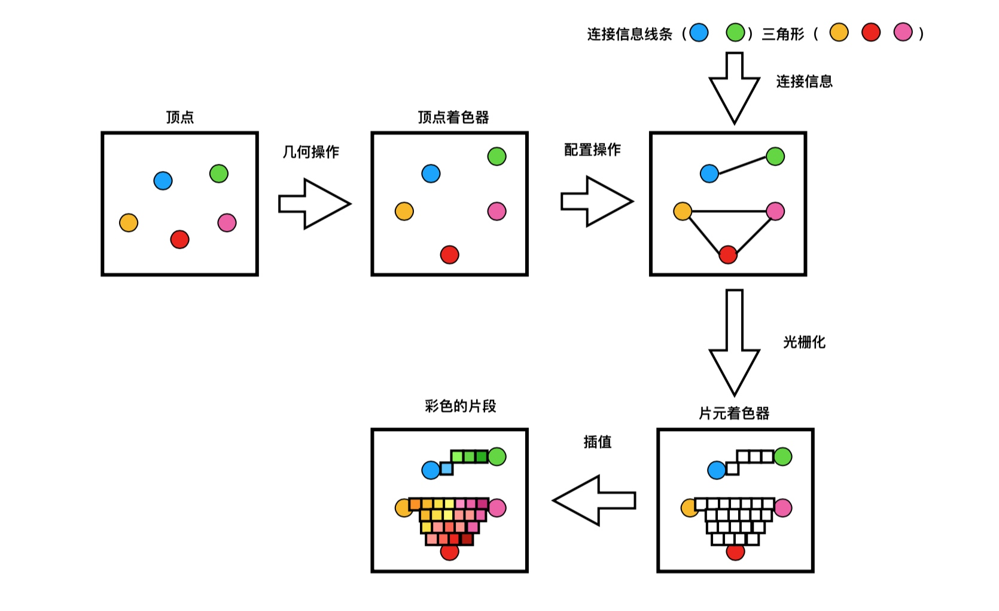

一、什么是图形编程接⼝
2D图形编程接⼝: GDI, Skiz, OpenVG
3D图形编程接口: DirectX, OpenGL/OpenGL ES, Embedded Systems
二、图形编程接口与图形硬件的关系
OpenGL，图形编程的接口
GPU 图形硬件，图形处理器
简单理解为：
当应用需要图形的绘制以及渲染时，它会通过OpenGL ES框架，向GPU传输相应绘制指令，GPU收到指令后会进行相应操作），最终将渲染结果在屏幕上绘制出来。
三、OpenGL 的特点
1.跨操作系统平台运⾏
2.隐藏底层硬件信息
3.专⽤渲染接⼝
四、OpenGL ES
OpenGL for Embedded Systems（OpenGL ES）是OpenGL的简化版本（专门为嵌入式系统设计，在移动端操作系统中应用广泛），该版本消除了冗余功能，提供了更易学习且易于在移动图形硬件中实现的库。
五、OpenGL ES 的版本
- OpenGL ES 1.X :针对固定功能流⽔水管线硬件
- OpenGL ES 2.X :针对可编程流⽔水管线硬件
- OpenGL ES 3.X :OpenGL ES 2.0的扩展
六、着色器渲染过程
在渲染过程中，必须存储2种着色器，分别是顶点着色器、片元着色器。顶点着色器是第一个着⾊器、片元着色器是最后一个。顶点着⾊器中处理顶点、片元着⾊器处理理像素点颜⾊。
